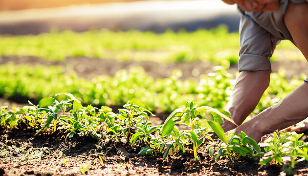

About

An Innovative Agriculture Solutions Provider
Founded in 2008, GreenRoot Agri was built to connect farming communities with reliable expertise, technology, and long-term support.
We now serve growers, estates, and agribusiness partners across multiple regions with a practical blend of agronomy, irrigation, monitoring, and export services.
Our team focuses on measurable outcomes: healthier soil, stronger yields, smarter water use, and better market access.
Growing with Communities, Estates, and Agri Partners
What began as a plantation advisory effort has gradually evolved into a broader agriculture support platform. Over the years, our role expanded from field productivity guidance into irrigation planning, crop supervision, sustainable land improvement, and market-oriented operational support.
That growth was shaped by the needs of the people we worked with. Estates needed better systems, grower networks needed stronger coordination, and agricultural businesses needed reliable quality and supply structures. Our journey has always followed those real needs rather than trends alone.

Our Vision
To make sustainable farming the standard by helping every acre become more productive, more efficient, and more resilient.
Our Mission
- 🌱 Deliver science-backed agronomic guidance.
- 📈 Improve productivity with practical technology.
- 💻 Make modern agri-tech easier to adopt.
- ♻ Promote regenerative and soil-friendly practices.
- 🤝 Build fair and transparent supply chains.

Values That Shape Every Plantation Partnership
We believe credibility comes from practical work. Our advice is shaped by field realities, local operating conditions, and the long-term needs of the estates and communities we support. That is why integrity and responsibility remain central to everything we recommend.
We also value partnership deeply. Plantation improvement only lasts when owners, managers, and field teams move in the same direction. Our role is not simply to provide recommendations, but to help turn them into working systems that people can trust and sustain.

Terms & Conditions
Standard business terms apply to all website usage and service inquiries.
Privacy Policy
We protect submitted personal information and use it only for support and communication.